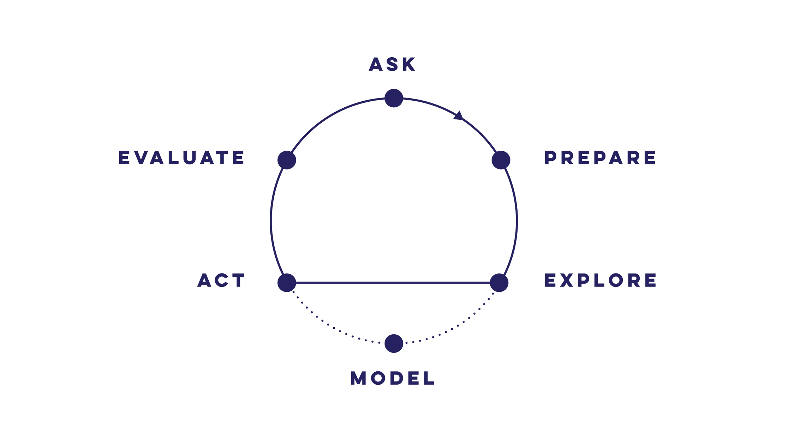
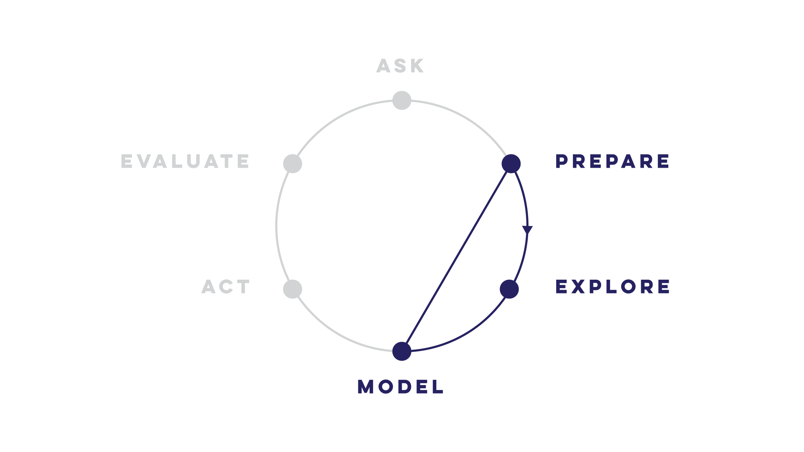

Modelling - a brief reflection
Introduction
While working on the geospatial analysis of walkability, I realised that modelling requires its own introduction and it’s worth taking a high-level persepective into why modelling is useful. I hope to make the case that approximating reality with models allows us to dredge up some useful insights.
Applications of this post can be seen in the final post of walkability, where we will look at: - The accessibility characteristics of a suburb - Suburban characteristics don’t fit our model approximations. And how we can update our model to better reflect reality.
The goal of statistical modelling
The best reason for trying our hand at statistical modelling comes from the entertaining and brilliant pedagogue: Ben Lambert.
In life, noise obfuscates signal. What we see often appears as an incoherent mess that lacks any appearance of logic.
Statistical inference is the logical framework we can use to trial our beliefs about the noisy world against data. We formalise our beliefs in models of probability.
- A Student’s Guide to Bayesian Statistics, Ben Lambert (p 17)
In his book, Lambert goes on to elaborate the gains acheived from employing a Bayesian approach to statistical inference. Our analysis into accessibility by suburb doesn’t explicitly benefit from a Bayesian approach but I’ve chosen to use it anayway since I’m now completely avowed to The Bayesian Way (Bayes-do?).
Models as an approximation of reality
The core component of statistical inference is a statistical model - often shortened to just model. Common models formalise the data generation process by quantifying the relationhip between inputs and outcomes. For example, linear regression models quanitfy the relationship between a set of user-defined inputs and the possible outcomes given those inputs.
The model we’re using in this post is much simpler: we’re considering the probability space of the outcomes - with a particular interest in summary statistics like the mean, \(\mu\), and standard deviation, \(\sigma\). As we’ll see, we choose a particular mathematical form to represent the probability space of average (\(\mu\)) and heterogeneity (\(\sigma\)) of accessibility within a suburb.
Model with care
It’s worth noting that not all data-driven questions benefit from statistical modelling. Models can be complicated and difficult to explain to others - even technically-oriented peers. In view of this, some data evangelists advocate a simpler analysis process. Kat Greenbrook highlights how the modelling aspect can be left out for many business analytics questions.
| Data Science cycle | Data Analysis cycle | “Modelling Silo” |
|---|---|---|
 |
 |  |
| Actions from model output / insights | Actions directly from exploratory analysis | Pointless modelling. No pertinent question and no actions |
- Images © Kat Greenbrook
Data anlysis alone is powerful; exploratory analyses unearth useful insights that can be followed through with business actions. As people who harness data for a purpose, we must constantly evaluate whether the extra complexity of the model layer is adding significant utility and insight.
Modelling should never be undertaken if there is not a clear use case for the output.
As someone who has frequently lunged into modelling without a cause, I can attest to the pervasive culture of the ‘Modelling Silo’ in Data Science. This ‘cycle’ is wholly disconnected to pertinent questions and, any useful actionable output.
Model for a reason
Now that we have been cautioned to think before we model, we can identify how models can help better understand playground accessibility in Wellington.
In the previous post, we ended with heatmaps of accessibility - defined as total travel time. The heatmaps conveyed a holistic picture of areas with worse accessibility due to the hilly topography. However, we couldn’t pick out any details from the overview. For example, we might care about how our specific neighbourhood compares to another, or our neighbourhood vs. the average for the city.
Comparisons can be done with single point values alone. But, robust comparisons rely on statistical inference - the most classic being the t-test for comparing two means. In the walkability modelling post, we will see how we can robustly compare suburbs using a Bayesian statistical model.
Models for decision making
Adding a model for comparing suburbs has further utility - it can be used for explicit or qualitative decision making. Explicit decisions are appropriate in a business context since executives want to tl;dr the best option. Since this series is more focused on exploration, we’ll be building a qualitative picture guided by metrics and analyses.
Can we summarise the playground accessibility characteristic for a given suburb?
This question can help understand how “family-friendly” a particular suburb is. Young families could compare the suburb accessibility characteristics to help make the decision for a move or, evaluate whether the suburb is right for their lifestyle.
From this question and potential use, we can desgin the model and outputs for an intuitive comparative analysis. The final model allows for two levels of qualitiative comparison: (1) comparing a single suburb to the city average or, (2) comparing any two suburbs together.
Models to support domain understanding
Since models approximate reality, the difference between the model and reality can also add valuable insight.
Which suburbs don’t follow the approximation set by the model? Can we use our domain knowledge to understand why?
In this scenario, mismatch between the data (‘reality’) and the model can help us understand the nature of suburbs better; and use this understanding to update our model for a better representation of reality.